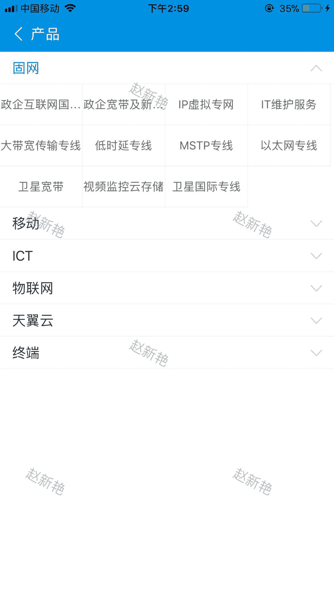
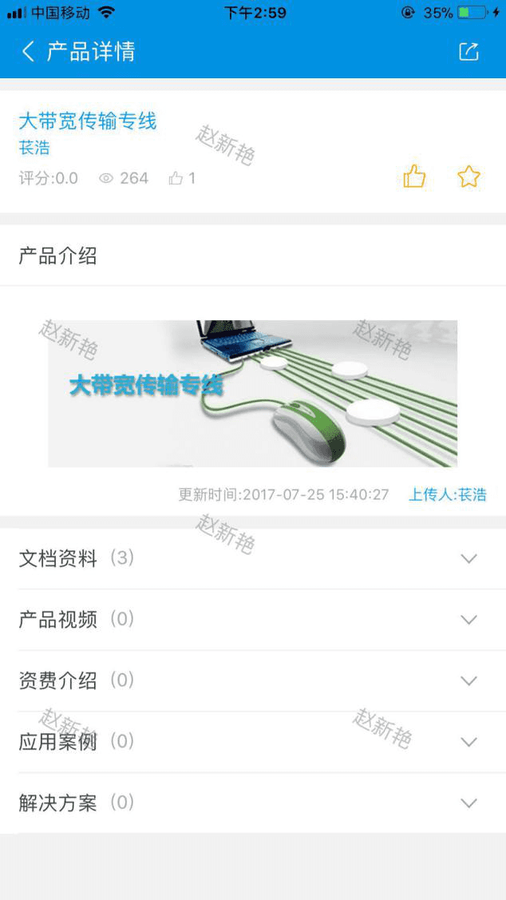
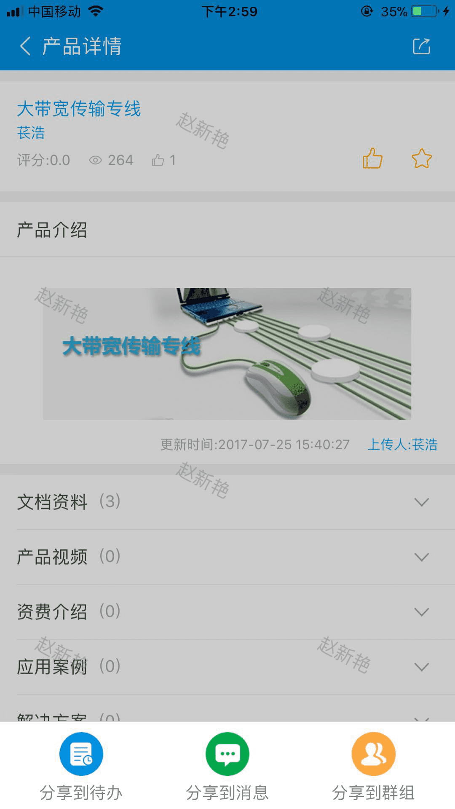
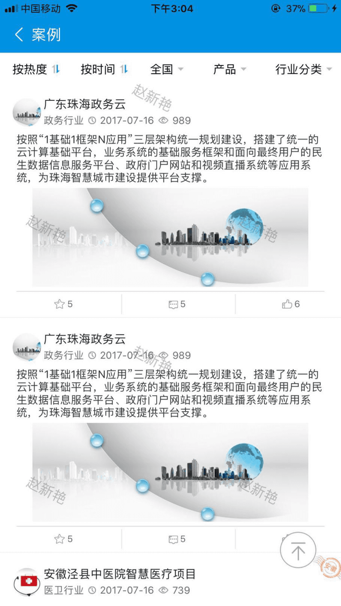
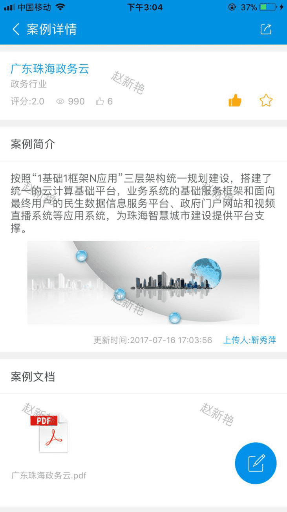
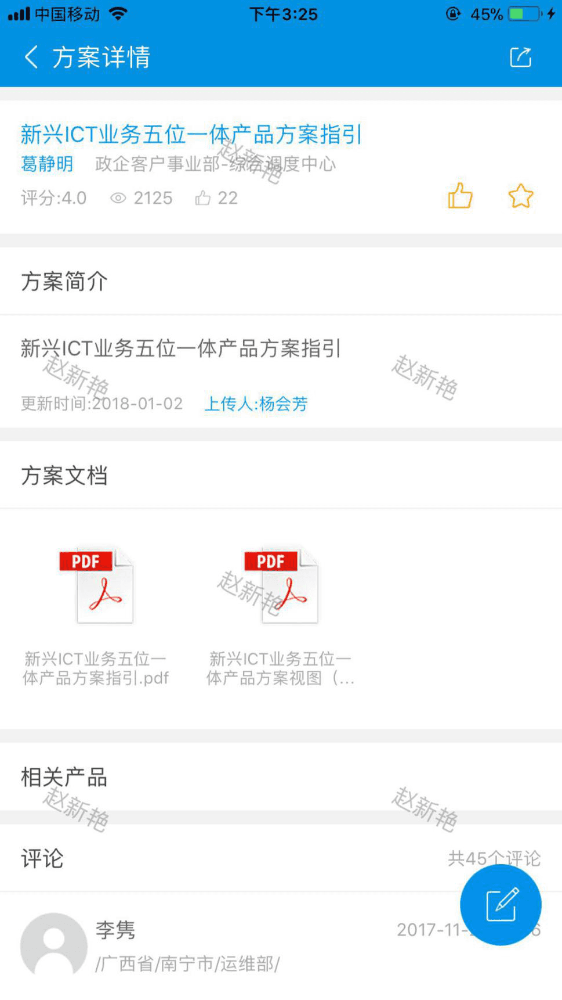
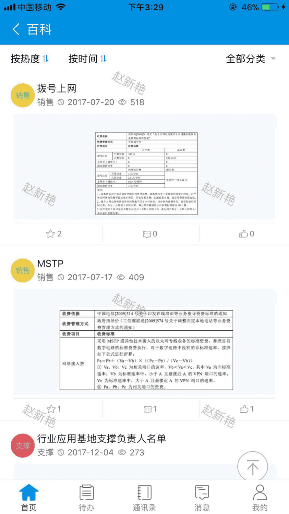
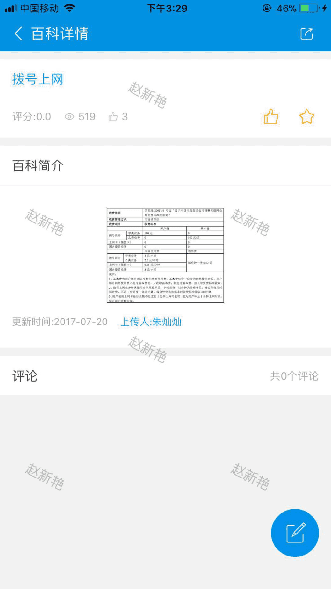
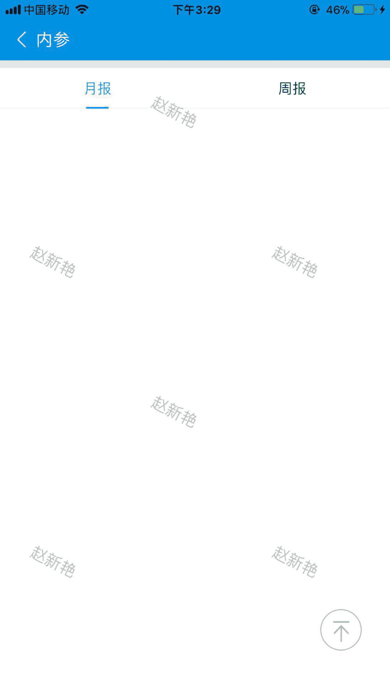

工作台，点击产品，进入产品列表，列表展示产品的分类和各个产品的名称，点击某一名称，进入产品详情页。
详情页展示该产品的具体详情，可以对该产品进行点赞和收藏，点击人名可以弹出人员信息页面，方便联系上传人和作者，做进一步的交流。也可以内部分享该产品，点击分享按钮，弹出分享渠道。
根据选择不同的分享渠道，被分享人看见的地方不同，可以分享到待办，消息、群组。
工作台，点击案例，进入案例列表，可以通过热度、时间、地区、所属产品、行业进行筛选，点击某一案例，进入案例详情页。
详情页展示该案例的具体详情，可以对该案例进行点赞和收藏，点击人名可以弹出人员信息页面，方便联系上传人和作者，做进一步的交流。也可以内部分享该案例，点击分享按钮，弹出分享渠道，分享同产品分享。点击可对该案例进行评论。
工作台，点击方案，进入方案列表，可以通过热度、时间、地区、所属产品、行业进行筛选，点击某一案例，进入案例详情页。
详情页展示该方案的具体详情，可以对该方案进行点赞和收藏，点击人名可以弹出人员信息页面，方便联系上传人和作者，做进一步的交流。也可以内部分享该方案，点击分享按钮，弹出分享渠道，分享同产品分享。点击可对该方案进行评论。
工作台，点击百科，进入百科列表，可以通过热度、时间、类型进行筛选，点击某一百科，进入百科详情页。
详情页展示该百科的具体详情，可以对该百科进行点赞和收藏，点击人名可以弹出人员信息页面，方便联系上传人和作者，做进一步的交流。也可以内部分享该百科，点击分享按钮，弹出分享渠道，分享同产品分享。点击可对该百科进行评论。
工作台，点击内参，进入内参列表，可以通过月报、周报进行查看，点击某一内容，进入相应的详情。
